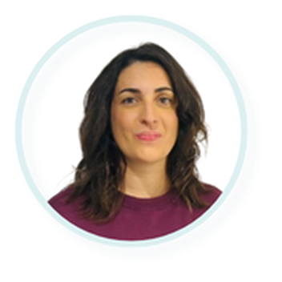

Bachelor of Nursing
IFSI du CRIP, Castelnau-le-Lez, France
Nursing student · IFSI du CRIP · Montpellier, France
A former state-certified ambulance technician, I am training in nursing with rigour and empathy, to care for every patient with professionalism.

My name is Anaïs, and I am a nursing student at IFSI du CRIP in Castelnau-le-Lez. After several years as an ambulance technician at the University Hospital of Montpellier, I am continuing my training to care for patients in stable and critical conditions, as part of a team, with active listening, adaptability and a calm approach.
Placements and opportunities in nursing, in Montpellier and the Hérault area. Feel free to get in touch.
Currently in placement no. 3 (3rd semester): psychiatric care at the Post-Emergency Psychiatric Unit, Lapeyronie, University Hospital of Montpellier.
Coming up: placement no. 4 – to be completed.
Coming up: placement no. 5 – to be completed.
Coming up: placement no. 6 – to be completed.
Coming up: placement no. 7 – to be completed.
IFSI du CRIP, Castelnau-le-Lez, France
CRIP, Castelnau-le-Lez, France
University Hospital of Montpellier, France
Sanitary Reserve (SPF), France
University Hospital of Montpellier, France
France
Cardiology and Pulmonology Intensive Care Unit, University Hospital of Montpellier
Medical and Rehabilitation Care, private clinic
Child and Adolescent Psychiatry, University Hospital of Montpellier, and senior nursing home
Patient transport and care · Doublet, University Hospital of Montpellier, Arc-en-ciel
Transporting newborns from the helicopter landing zone, University Hospital of Montpellier
“Listen and Inclusive” program (CDC) and a digital tool for people with multiple disabilities
My online tools and projects, made for my studies and everyday life.
A message, a placement offer? Write to me and I will reply quickly.